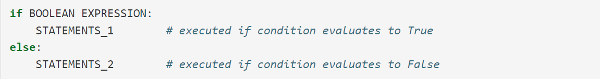

Programming Tips
This textbook has a chapter full of tips to help produce good code and help you stay happy during that process. Very important and useful info. Here is a link: Ch 3.
Make sure to fully understand what you want to do first. Many professors recommend writing out the steps that you will take in your program first, either in plain writing or in pseudocode (if p == 1 add 2 is psuedocode, because it says what you want to do but isn't fully accurate code).
Start with something small and make sure it works before moving on to the next part. Once you get something that works, you can continue adding to it. It is easier to do this than to try to do everything at once and go back and check it later. This also "creates a lot of small victories for yourself" which helps keep the whole process from being evil and draining and boring.
It is important to test as you go. This helps you verify that your code is working and eliminate edge cases that may arise unexpectedly.
Background
Python is a high-level programming language. Low-level programming languages are also called machine languages or assembly languages, and they are the information passed directly to the computer to instruct it. High-level languages are ways of coding that the computer must process before it can understand and execute. It is easier to write in high-level languages. Additionally, high-level language code is 'portable' in that it can be processed and run on/by multiple types of computer, while low-level languages are specific to one kind of computer.
There are two kinds of programs to process high-level languages. Interpreters read the code and execute it by alternating between reading lines of code and performing computations. Compilers read the program completely before starting to run the code. It takes in source code (the high-level language code) and converts it to object code/the executable (low-level language translation of source code). Once code is compiled, it can be run repeatedly. In contrast, interpreters have the same process of reading and running every time, regardless of whether they have seen the code before. Many modern languages use both processes. First, a compiler converts source code into byte code, which is interpreted by a virtual machine. Python does this, but is more broadly considered an interpreted language.
Shell mode is a way of using the Python interpreter where you type Python expressions into the Python shell, which spits out a result. This is helpful for testing small bits of code where you want immediate feedback. Program mode is when you instead write a program in a file (the source code) and pass it to the interpreter.
.py
When in program mode, end the name of your source code with .py to tell the intepreter that it is a Python program. Run this program by calling python filename.py in the command line.
Formal and Natural Language
Natural language is spoken language that evolved naturally. Formal languages are developed specifically and intentionally with a specific purpose or application in mind. Mathematics, chemistry, and programming all use formal languages to standardize syntax and make work legible to other people. Formal languages therefore have strict syntax rules in a way that natural language does not. If you say "hillo", English speakers will most likely gather that you wanted to convey a greeting, but if you say "5 s 2", mathematicians will be unlikely to understand that you wanted to subtract 2 from 5.
Tokens are the basic elements of a language, such as words, numbers, or chemical elements. Structure is the way that the tokens are arranged. It is especially important in a formal language to ensure that you are using the correct tokens and structure.
Parsing is the process of figuring out what a language expression means, such as reading a sentence and interpreting that this word is a verb and that one a subject and so on. Once you have parsed a sentence, you can figure out what the sentence means, which is its semantics.
There are other differences between natural and formal languages. Formal languages are intentionally unambiguous (for the most part...) so that every statement has one interpretation which does not rely on context. Formal languages also aim for less redundancy and for brevity. Finally, formal languages are very literal and lack idiom and metaphor. Formal languages are often dense, for all the reasons given above.
How to Actually Code!
Basic Computations
A program tells a computer how to perform some action. Here are the basic intructions you will see and use:
- input: get data from somewhere
- output: display data to somewhere
- math: perform basic mathematical operations
- logic: perform basic logic operations (and/or/not/etc)
- conditionals: perform some action based on a certain condition
- repetition: perform an action some number of times
Bugs and Errors
Programming errors are called bugs, and debugging is just the process of finding and correcting them. There are three kinds of errors:
- Syntax errors: an error in formatting that the compiler/interpeter cannot read/process.
- Runtime errors: an error that has correct syntax but produces an invalid result. These only appear when you run the program, because the interpeter/compiler can read the code without detecting issues. They are also called exceptions.
- Semantic errors: an error in which the program runs successfully but produces a different result than you wanted it to.
Comments
Comments are a great way to make your code more legible/understandable. They are little bits of text that the intepreter/compiler ignores. Some examples of when it is helpful to include a comment are: to explain how a confusing part of code works, to explain what a program or specific method does when you know you will need to look back at something later, to suggest parts of your code to check for errors, to keep old code that you don't want run but may want to look back at, to explain to an instructor why you did things a certain way.
Blank lines between code are also ignored by the interpreter/compiler but can make your code a lot neater and more legible, so it is good programming practice to use them liberally.
Data Types!
A value/object is something such as a word or number that a program can use or manipulate. There are different data types that a value can fall under.
A string is a data type that usually contains a word or phrase, although numbers can be part of a string. A string is enclosed in quotation marks; either " " or ' ' work. When you use " ", you can include ' ' as a character within your string, such as "Joy's cat" or "said 'meow'". The reverse is also true; strings denoted by ' ' can contain " " as a character. You can also use ''' ''' or """ """ if you want to include both ' ' and " " in your string. This is called a triple quoted string. A string is referred to as str in Python.
An integer is a whole number. It is referred to as int in Python. A floating point number is a number with a decimal point. It is referred to as float in Python. Do not put commas or spaces in either of these, because that can change the way the compiler/interpreter reads the value.
You can find out the data type of a value by using the type() function. It will not display to the screen automatically, because sometimes you want to use that funtion within a conditional or something, so if you want it to print to the screen, use the print function like this: print(type(__)) with your value where the underline is.
You can also convert a value from one data type to another. Python is especially efficient at this! It has built-in functions such as int(), float(), and str() to do this. These are type conversion functions. There are, however, some rules about how to use them. For example, int() can take a float or str and convert it to an int by discarding anything after any existing decimal points. float() can take an int, and will add a .0 to the end of it. float() can also take a string if the string has no tokens that would be invalid in a float. str() just sticks quotes around whatever you give it to convert something into a string.
Variables <3
A variable is a name that refers to a particular value. Assignment statements create variables and assign them a value. It is very easy to create and assign a variable in Python. You just give a variable a name (like var1) and assign it to a value (like 3) using the assignment operator, which is just an equal sign. So it would just look like var1 = 3 and then my var1 variable is created, assigned, and ready to use!
Variables often change, so you can reassign them in your code. The value of a variable is whatever it was most recently assigned. To reassign a variable, use the exact same process that was used to create it in the first place.
Another thing to mention about assignment and reassignment is that you can set a variable equal to another variable. This just means that the first variable takes on the value of the second variable at the time of assignment, although one or both can change value later without affecting the other. This actually is not true for other languages, such as Java! Python is much easier to use when it comes to changing the values of variables.
The most common reason a variable would be reassigned is that it is some sort of counter that needs to update a total. Sometimes you will see x = x + 1, which is an expression that gets the value of x and then sets the new value of x equal to the old value of x plus one. This works because the interpeter/compiler first evaluates the expression on the right side of the assignment operator, then sets the variable equal to that result. For this reason, this only works with an existing variable. You cannot have this be the statement that creates the variable and assigns it. The process of setting a variable equal to itself + 1 is called incrementing, and the process of setting a variable equal to itself - 1 is called decrementing.
There are a lot of rules and conventions when it comes to naming variables. You cannot use a space in a variable name. It is common to use underscores in place of spaces in long variable names, such as price_of_item. You should start a variable name with a letter, not an underscore or number, though it is common and accepted to use numbers in a variable name. Capitalization matters, so cat and Cat are different variables. You also cannot use 'reserved characters' as a variable name. Reserved characters are things like +, -, =, or keywords that refer to functions (eg type or print). You can use those words within the variable name if you really want to, such as var_type or str_to_print. Python programmers typically prefer to use lowercase letter in variable names, especially for the first letter.
Statements vs Expressions
A statement is an insruction that an interpeter/compiler can execute, such as an assignment statement. An expression is a combination of values, variables, operators, and functions that a compiler/interpreter evaluates. If you print an expression, it will just print the result.
Operators and Operands
Operators are special tokens that have a specific purpose such as addition or assignment. The values that they affect are called operands. Operands can be variables. Operators differ by language, so the ones below are specific to Python in both what token they are represented by and what they actually do.
- +
- Adds two values together if valid values are provided. Number + number = number and str + str = concatenated str (eg "two" + "three" results in "twothree").
- -
- Subtracts two numerical values if valid values are provided. Does not work for strings.
- *
- Multiplies two values if appropriate values are provided. You can also multiply a string by an integer to concatenate the string to itself several times (eg "hi" * 3 results in "hihihi").
- **
- Exponentiation operator. The first value is multiplied by itself the number of times given by the second number (eg 2 ** 3 results in 8).
- /
- Divides the first value by the second if appropriate values are provided. It always returns a floating point number as a result.
- //
- This is called integer division, and it is used when you want to truncate the result and get an integer result. Note: it always rounds down to the lowest number, so when your result is negative, it is going to return the more negative number (eg 6//4 results in 1 but -6//4 results in -2 because -6 divided by 4 is -1.5).
- %
- This is the modulus operator, also sometimes called the remainder operator. It divides the first operand by the second and results in the remainder.
You can use multiple operators in an expression, and they will be evaluated following the rules of precedence. This is generally the same as the mathematical rules of precedence (ie PEMDAS). Note: in the rules of precedence, operators with equal precedence are left-associative ie go from left to right. The exception to this is exponentials, which go from right to left. For example, 2 ** 3 ** 2 is 512 instead of 64 because instead of doing (2 ** 3) ** 2 and getting 8 squared, it does 2 ** (3 ** 2) and gets 2 to the ninth. In addition to using parenthesis to change the order of operation, you can also use parenthesis extraneously just to make the expression easier to read.
Functions
A function is a sequence of statements grouped together under a name that a program can call to execute the statements at any time. They are used to organize programs and increase functionality. To create a function, you use the "def" keyword followed by a name and parenthesis, in which you can add parameters if you want to. All of this is followed by a colon and then your code to execute (indented from the line above and lines below the function). This looks like:
def name(parameter, parameter):
statements
The naming rules and conventions for functions in Python are, as far as I know, the same as the ones for variables. Also, the parameters of a function are basically variables specific to the function. So whatever parameters you use will be visible within the function but will not be declared in the typical sense. When you call a function that has parameters, you call it by using the name of the function with values to assign to the parameters in parenthesis, such as name(3, "for")
You can also define variables within the function. Due to rules about variable accessibility, variables created within the function will also not be accessible outside of the function (just like parameters). Generally, in my limited experience, you do this when you only need the variable temporarily within the function and don't want or need it to be seen outside the function. The benefit to defining parameters is that you can pass them into the function with different values that change the functionality of the function.
So as an example, if you have a function that returns a sum after it adds two to itself a certain number of times, you might want to use a parameter to pass in the number of times you want it to be added as well as a variable that starts at 2 and is updated until the function has executed the appropriate amount of additions. That way, when you call the function, you can tell it how many times to add two, but don't have to also provide the same variable of 0 every time.
It is also customary to include a docstring in your function. A docstring is just a special kind of comment that exists mostly to describe what a function does. It has some special properties such as theoretically being retrieved at runtime but I don't really know anything about that so. moving on.
When you write a function, you may want it to just execute some steps such as opening a window or creating an object. However, there are also a lot of times where you will want it to manipulate some value that you will use again later in the code. This is when you would want to return that value. Returning something means that when you call a function, it produces a value that you can store in a variable or feed as a parameter into another function or something. You do this by putting the keyword "return" at the bottom of your function, followed by a space and then a value. Usually this will be a variable, it is unlikely that you would ever see something like "return 5".
A local variable is one that only exists within a subset of code such as a function, while a global variable is one that exists within every part of the code that comes after the definition of the variable. The "lifetime" of a local variable is the amount of time that it is valid/able to be used. If you use a local variable outside of its lifetime (ie outside of a function it is created inside of), you will get an error message. Since the lifetime of a global variable is the entire document, you can call a global variable within a function. However, this is considered a bad coding practice, and should be avoided. If you want to access a global variable in your function, the best way to go about doing that is to make a parameter and pass the variable into the function that way.
Main Function
Many languages don't allow you to just have code sitting at the bottom of your program to call things. Python doesn't rally care, so you don't have to worry about a main function (more alliteratively known as the main method), but it is considered a good coding practice to use one anyway. The main method just holds all the code that you need to actually run your program in one function, and allows you to just call that at the bottom of your program. It's mostly just a way of organizing things, at least in a Python document.
Another reason to have a main method pertains to modules. Before an interpeter runs your program, it gets information on the program. One piece of information that it collects is a variable called __name__, which defaults to the string value "__main__" when it finds that the program is being run on itself. If the program is being imported by another program, then __name__ is set to the filename of that module. This is used to determine when to execute or not execute the main method. If you are writing a program with the intention of exporting it to another program, you may want to call your main method in a conditional instead of just calling it every time your program runs. Your condition would be if __name__ == "__main__": and then it would call the main method.
Error Types
Nearly 90% of the errors that the authors of the textbook encountered while writing it were one of four error types. Here are those errors and what they mean.
- ParseError: a syntax error which prevents the compiler/interpreter from parsing your code
- TypeError: an error that occurs when incompatible data types are provided and cannot be used
- NameError: an error that arises when a variable name cannot be found for one reason or another. Often this comes from trying to use a variable before it has been assigned a value, or misspelling a variable you want to reference.
- ValueError: when the value passed to a function is not compatible. For example, when you try to convert user input into an integer but the user did not type anything. This is different from a TypeError, which would be more like trying to convert the string "hi" into an integer.
Turtle Graphics
The next chapter is about how to use turtle graphics, which is a fun and cool thing you can do in Python that allows you to create a little object on the screen called a turtle that you can move around and manipulate. I'm going to leave this section blank for now and come back to it if need be, but here is a link to that part of the book: Ch 4
Modules
A module is a file containing Python definitions and functions that you can use in your program. You import them separately in order to use their functions and etc. You can find Python modules by looking at the Python documentation here. The documentation also has a lot of other useful information and is worth checking out, I guess. When using something from a module, you use dot notation to tell the interpeter/compiler that you are referencing the module. This is just using the name of the module, a dot, and then the thing you're using. So to use the square root function in the math module, it would be math.sqrt()
Other helpful modules include the math and random modules, which you can use to do more complex math and to pick random values respectively.
Any source code that you write is technically a module, so you can import your own code and use your own methods in other work by just saying "import filename" and omitting the .py
For Loops
A for loop is a valuable tool in programming that tells a program to execute specific steps a certain number of times until some condition is met. I think the easiest way to show this is by going through an example.
Think about multiplication. multiplication is the process of adding a number to itself a certain number of times, eg 2 times 5 is equal to 2 + 2 + 2 + 2 + 2. So if we put this into a for loop, we would say for every time until we reach the sixth time, add two to a sum variable. In order to perform that checking operation that stops the loop from adding the 2 a sixth time, we can use the range function. This function returns a sequence of numbers between 0 and a specified number. So by using the range function, we are saying that the program should add 2 to a sum variable for each time within the returned sequence of numbers given by range(). Here's the code:
def multiply(num, by):
total = 0
for n in range(by):
total = total + num
return total
So what this is doing is taking the expression 2 * 5, where 2 is the "num" number and it is multiplied "by" 5. Then, it is starting a sum variable called total at 0 so that the existing sum is 0. Then, it has a for loop that uses range to stop the for loop on the "by"th (5th) repetition. It does this by calling range(by) to get the sequence of numbers between 0 and "by", which is 0, 1, 2, 3, 4 because range starts at 0 and stops "at" the number provided, not "on" it. It is using a counter variable n to refer to each number in that list. So on the first run-through, n = 0. The total is increased by our "num" number, which is 2. It has reached the end of the indented text, so it automatically moves n forward by setting it to the next number in the sequence. So now n = 1. The process repeats, so 2 is added to the total. Then n = 3, and 2 is added again. Then n = 4, and 2 is added again. Then n = 5, which is not in the sequence, so the for loop sees that and stops performing actions. The next line of code after the for loop activates, which is the return statement in this case. Since we've added 2 to the total variable on each of the five times the loop ran, we should be returning a total of 10.
Selection
A bool is another data type used to store either of two values: True and False. These are different from strings and are not contained by quotes. You can use an expression with logic operators to get a bool in Python, such as print("hel" + "lo" == "hello") which will print the bool True to the screen.
There are seven comparison operators that return a boolean value by comparing two values:
- ==
- Equality operator; checks whether two values are equivalent
- !=
- Checks whether two values are inequivalent
- <
- Checks whether first value is less than second value
- >
- Checks whether first value is greater than second value
- <=
- Checks whether first value is less than or equal to second value
- >=
- Checks whether first value is greater than or equal to second value
There are three logical operators which also return bools
- and
- Only returns True if both expressions return True
- or
- Returns True if one of the expressions returns True
- not
- Only returns True if the expression returns False
Something that could be important is that there is a hierarchy of operators. First come the mathematical operators, with their own precedence still in place. Then, the comparison operators. Finally, the logical operators. There is also a hierarchy within the logical operators themselves, with "not" coming before "and" and "and" coming before "or".
Conditionals
A selection statement, conditional statement, or conditional is a way of making sure a portion of your code only runs if certain conditions are true. The simplest form of selection statement is the if statement. An if statement looks like this:
The boolean expression is called the condition. The if statement is fairly straightforward. If the condition is true, do this action. If it is not true, (else) do this other action. You do not need to include the else statement if you don't want to. In the case where an else statement is omitted, the code block under the if statement will run if the condition is met, and the compiler/interpreter will instead proceed to the text after the if statement if the condition is not met.
If you have more than one condition you want to check, there are a couple ways you can go about doing that. You can use a nested if statement, a compound condition, or an elif statement.
If you wanted to check that one condition was true first, and then check another condition once you knew it was true, you could use nested if statements. For example, if you wanted to find out if an animal was a lap dog, you could first check if the animal is a dog using an if-else statement. If the animal is a dog, you can then check its size with another if statement nested inside the "if" code block of the first if statement. This nested if statement would check the size of the dog, which would tell you whether the dog is a lap dog. Here's an example:
If you wanted to check if one condition is true in combination with another condition, you could use a compound condition. You would use an if-else statement but change the condition in the if statement to use logical operators. Using the same lap dog example, we would change the if statement so that it checks the type of animal and the size of the animal. Here's what that would look like:
Finally, you can use an elif statement when you have multiple conditions that you want to check separately. Elif means "else if". When you use an elif statement, your if statement checks the condition. If the condition is not true, it proceeds to the elif statement and checks if that is true. This means that there are two separate checks. In our lap dog example, this is actually kind of the least efficient way to do this just because we will have to use the compound condition if statement and so may as well have just done that by itself. But here is an example using an elif statement:
Another important thing to mention is that you can use multiple elif statements in succession, and the compiler/interpreter will just keep going through them and checking their conditions until it finds one that is true. Relatedly, if you have an elif statement in which multiple conditions are true, the compiler/iterpreter will only execute the code block under the first elif statement in which the condition is true!
Boolean Functions
Boolean functions are functions that return True or False. Many boolean functions use conditionals. It is common for boolean functions to have a name that sounds like a question, such as isDivisible or is_even_num. That way, you can call the function on a value and it will either say True or False to the "question".
Iteration
Iteration is repeatedly executing the same sequence of statements. A for loop is an example of this, and there are several more. Another way to do iteration is by using a while loop. This is a loop that executes the code block every time until a condition is false. It is common to have a sum variable that you update every time the code block executes, and have the while condition be something like "while sum != 10" or "while sum < 5" so that it stops whent he sum variable reaches a certain number. One thing to note is that the while loop will not stop executing the code block in the middle even if the while condition becomes false in the middle, it will finish executing the entire code block and go back to the top of the loop where it checks whether the condition is true. If the condition is never false, your while loop will continue executing until your device runs out of space and crashes. This is called an infinite loop. A for loop is sometimes considered "definite iteration" because it repeats a specific number of times, and it is harder to get an infinite loop when using a for loop. A while loop can therefore be called indefinite iteration because we don't know how many times it will repeat.
Conceptual Programming Ideas
This type of algorithm, where a sum variable is updated in a for loop for a certain number of times, is called the accumulator pattern, because it is a very common format for a function.
Function Decomposition
Function decomposition is not as cool as it sounds, because computer scientists love to come up with the genuinely coolest names for stuff ever and then have it mean something so completely boring and useless. Function decomposition literally just means breaking a problem down into smaller subproblems and using different functions on each subproblem that work together to solve the problem. For example, if you wanted to add 2 squared to 3 cubed, you could use function decomposition to split up the problem and make it more manageable. You could have a function that finds the square of any provided number and a function that finds the cube of any provided number, then just call those on 2 and 3 respectively and add those results.
Function Composition
Function composition is the ability to build functions using other functions, or claling functions within other functions.
Flow of Execution
Flow of execution is another very cool name given to a mildly interesting topic. Flow execution refers to the order in which lines of your code are called. Let's say you write a program which defines a function at the top and calls it at the bottom. We will also only talk about interpreters in this case, as an interpreter is what will end up going line to line and doing stuff. Your interpreter will start at the top of your code, working its way down. If it finds a function definition, it will read the first line and parse it, but will see that it is a function declaration and jump to the line after the end of your function. Now it will look at the line where you call the function and jump back up to where the function is defined. It will then go back through that function, this time executing each step it reads. Then, once it completes the function, it will return to where it originally was and continue moving down through your code. Since functions can call other functions, this also leads to occasions where the interpreter goes down to the bottom where code is called, jumps to a function, jumps to another function, runs that, goes back to the first function, runs that, and goes back to where the code is called.
How to Lay Out a Python Program
The official and proper way of formatting your Python program is as follows: imports, function declarations, declare main method, call main method. It is also typical to declare variables at the top of any functions (including main method).
Keywords and Functions to Use While Coding
Some Basic Python Functions to Use!
- print()
- This function displays something on the screen. If you want to display a number or variable, you can say print(5) or print(variableName). If you want to print a specific string, use quotes such as in print("Hi!")
- type()
- This function gives the data type of a variable. It does not print that information to the screen.
- len()
- This function tells you the number of characters in a string. It does not print that information to the screen.
- input()
- This function asks the user for input. You can put a prompt string in the parenthesis which displays to the screen, and then the user returns the input as a string value.
- import __
- This is not exactly a function, but it is a command used to import a module.
- def __():
- This is a keyword that allows you to define and write your own function. The name goes in the space where the underline is and any parameters go in the parenthesis. The code that you want the function to execute goes in an indented block below this line, and the indentation ends when your code wihtin the function ends. This allows the compiler/interpreter to understand what is part of your function and what is new code outside of it.
- abs()
- This function returns the absolute value of a number provided in the parameter. It does not print this information.
- max()
- This function returns the maximum value out of the list provided in the parameters. It does not print this information.
- range():
- This function returns a sequence of numbers between 0 and a specified number within the parameter. There are also other ways to call range that allow you to start at a nonzero number. This method does not print the sequence. Also, this is often used in for loops along with a counter that moves through the sequence and stops the loop once it reaches the end.